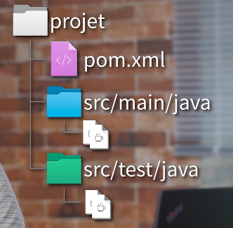

Maven¶
Création Projet Mvn CLI¶
Maven s’appuie sur des archétypes pour conserver la convention maven
$ mvn archetype: generate -DarchetypeArtifact=<nom de l'arcchetype> -DarchetypeVersion=<numero de la version>
{kind=link}
Avertissement
Attention pensé a changer le JRE utilisé par maven, il ne corresponds jamais à celui d’éclipse et vérifier que l’encodage est en UTF-8
<properties>
<project.build.sourceEncoding>UTF-8</project.build.sourceEncoding>
<maven.compiler.source>11</maven.compiler.source>
<maven.compiler.target>${maven.compiler.source}</maven.compiler.target>
</properties>
Compilation & Création .Jar¶
- Pour compiler et créer un .jar on utilise la commande suivante:
@delaval-lenovo:~/MonApplication$ mvn package
{kind=link}
- Pour lancer l’application :
@delaval-lenovo:~/MonApplication$ java -cp target/MonApplication.jar org.monpackage.laClassJava
Etude POM.xml¶
Information Maven¶
<!-- Information Maven --> <groupId>org.example.demo</groupId> <artifactId>MonApplication</artifactId> <version>1.0-SNAPSHOT</version> <!-- numéro de version + Snapshot: détermine que le projet est en cours de développement --> <!-- une fois Snapshot enlevé : c'est une release, la version ne bouge plus! --> <packaging>jar</packaging> <!-- packaging peut etre un war pour tomcat -->
Information générale¶
<!-- Information générale --> <name>MonApplication</name> <description>La super application qui sert à rien</description> <url>http://maven.apache.org</url> <!-- url de l'application ou la page d'accueil du projet --> <!-- ==========Organisation======================== --> <organization> <name>Mon Entreprise</name> <url>https://www.doriandelaval.fr</url> </organization> <!-- ========== Licences =========================== --> <licenses> <license> <name>Apache License, Version 2.0</name> <url>https://www.apacha.org/licences/LICENSE-2.0.txt</url> </license> </licenses>
Propriétées¶
Ceux sont des constantes qui seront remplacées au moment de la compilation par mvn.
Convention on déclare la version de Junit en Propriétée et on la place dans les dépendances à la place du numéro de version en utilisant ${nom de la Propriétée}
<!-- ========== Propriétées ========================= --> <properties> <project.build.sourceEncoding>UTF-8</project.build.sourceEncoding> <maven.compiler.source>11</maven.compiler.source> <maven.compiler.target>${maven.compiler.source}</maven.compiler.target> <junit.version>3.8.1</junit.version> </properties> <dependencies> <dependency> <groupId>junit</groupId> <artifactId>junit</artifactId> <version>${junit.version}</version> <scope>test</scope> </dependency> </dependencies>
Propriétés pré-définies¶
| project.basedir | The directory that the current project resides in. |
|---|---|
| project.baseUri | The directory that the current project resides in, represented as an URI. Since Maven 2.1.0 |
| maven.build.timestamp | The timestamp that denotes the start of the build (UTC). Since Maven 2.1.0-M1 |
<https://maven.apache.org/guides/introduction/introduction-to-the-pom.html#Available_Variables>_
Propriétés particulières¶
| env | permet de renvoyer la valeur d’une variable d’environnement. Par exemple, ${env.PATH} |
|---|---|
| project | renvoie la valeur d’une balise dans le fichier pom.xml du projet. Par exemple, ${projet.organization.name} |
| setting | renvoie la valeur d’une balise dans le(s) fichier(s) settings.xml utilisé(s) par Maven. |
| java | renvoie la valeur d’une propriété systeme de Java. même propriété que java.lang.System.getProperties() : exemple ${java.version} |
Le Build¶
c’est le processus de construction d’un projet par mvn, on peut configurer différement le build en modifiant certains éléments.
Par exemple, modifier le repértoire de sortie
<!-- ============================================ --> <!-- ===========Le Build========================== --> <!-- ============================================= --> <build> <directory>${project.basedir}/output</directory> <!-- on remplace la sortie target par un dossier ici output --> </build>
Par Exemple, Mettre la class MAin dans le manifest du.jar pour l’excécuter simplement
<build> <plugins> <!-- ======= gestion des plugins (version)========== --> <plugin> <groupId>org.apache.maven.plugins</groupId> <artifactId>maven-jar-plugin</artifactId> <version>3.2.0</version> <configuration> <archive> <!-- creation du Manifest avec definition de la classe Main --> <manifest> <mainClass>org.example.demo.App</mainClass> </manifest> </archive> </configuration> </plugin> </plugins> </build>
Ligne de commande pour executer directement le .jar
$java -jar target/MonApplication.jar
Le Filtrage de ressources¶
- créer un repertoires sous : src/main/resources
- créer un fichier dedans ie: info.properties
- Y mettre les propriétés que l’on veut récupérer avec : ${nom de la propriété}
- Mettre dans le build du pom.xml les informations des ressources et les filtrer pour qu’ils puissent etre utiliser ou pas : option <filtering> à true ou false
<build> <!-- ===============resources================ --> <resources> <!-- repertoire permettant le filtrage des ressources --> <resource> <directory>src/main/resources/filtered</directory> <filtering>true</filtering> </resource> <!-- repertoire n'autorisant pas le filtrage des ressources --> <resource> <directory>src/main/resources/raw</directory> <filtering>false</filtering> </resource> </resources>
- Utiliser dans l’application les classes Properties et InputStream pour récupérer ses propriétés
Properties versionProperties = new Properties(); InputStream versionInputStream = null; try { versionInputStream = App.class.getResourceAsStream("/nom du fichier properties"); versionProperties.load(versionInputStream); } catch (Exception e) { e.printStackTrace(); } finally { if (versionInputStream != null) { try { versionInputStream.close(); } catch (IOException e) { e.printStackTrace(); } } } System.out.println("Application version =" + versionProperties.getProperty("String Key de la properties"));
Les Profiles¶
Les profiles permettent de créer des options pour le build de mvn
Example:
- créons deux repertoires différents un pour la prod et un pour le test src/main/resources/conf-prod, src/main/resources/conf-test
- mettons y un fichier properties dans les deux repertoires: même nom mais contenu différent
- créeons les profiles dans le pom.xml
<!-- ============================================ --> <!-- ===========Les Profiles====================== --> <!-- ============================================= --> <profiles> <profile> <id>prod</id> <build> <resources> <resource> <directory>src/main/resources/filtered/conf-prod</directory> <filtering>true</filtering> </resource> </resources> </build> </profile> <profile> <id>test</id> <build> <resources> <resource> <directory>src/main/resources/filtered/conf-test</directory> <filtering>true</filtering> </resource> </resources> </build> </profile> </profiles>
On a définit deux profiles un pour le test et un pour le prod avec un fichier properties qui aura un contenu différent en fonction du build utiliser
$ mvn clean package -P test ou prod